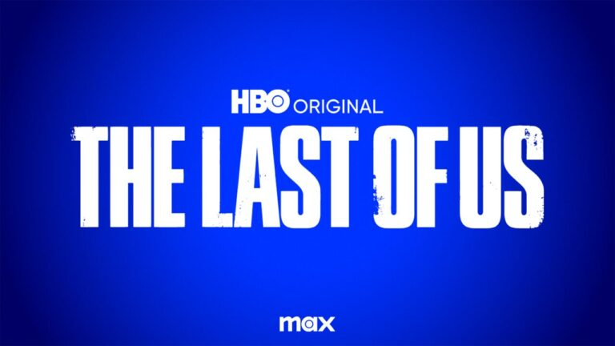

NOTICIAS
Fecha de estreno de la segunda temporada
La segunda temporada de la galardonada serie THE LAST OF US llegará pronto. Los primeros seis episodios de la serie de HBO ganadora de un Emmy® estarán disponibles en Max/HBO. Mientras, los fans pueden disfrutar de la historia.
Leer más